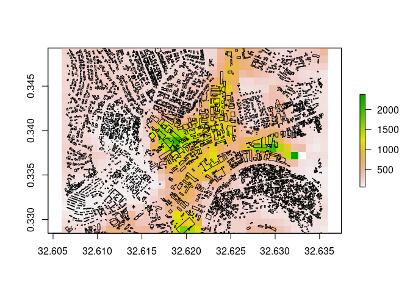

WorldPop Research Group, University of Southampton
While remote sensing has long been used to monitor urbanisation patterns, in recent years there has been an increasing availability in finer resolution satellite data covering large areas of the globe. This very high resolution imagery (often <1 m spatial resolution), combined with increased computing power is producing new datasets on urban areas. In particular, machine learning algorithms are being applied to detect, automatically extract, and map full sets of building features in a scene. These automated methods add to the manually digitised information such as from OpenStreetMap and the property datasets available from some city governments.
Such building footprint datasets provide a new level of detail on urban areas, particularly in places which might otherwise lack detailed maps on cities and rapidly growing areas. Despite their spatial detail, building footprints typically lack any other attribute information to help differentiate land uses or other neighbourhood characteristics. However, the size, shape, orientation, and clustering of structures produces a spatial pattern that can suggest areas of different land use or activities.
The foot package is designed to provide a set of consistent and flexible tools for processing 2D vector representations of buildings and calculating urban morphology measurements. The functionality includes basic geometry and morphology measures, distance and clustering metrics. These calculations are supported with helper functions for spatial intersections and tiled reading/writing of data.
The foot package can be installed directly from Github.
devtools::install_github("wgpg/foot", build_vignettes=TRUE)
Note that building and running the code may require additional packages: stars, raster, sf, data.table, lwgeom, mmap. et al.
A sample dataset of building footprints is provided:
Vignettes are provided as an introduction to foot. The vignette on basic usage is available from vignette("footsteps", package="foot"). The supplied datasets can be used to replicate this vignette. For a discussion and example of creating gridded data layers, see vignette("bigfoot", package="foot"). Finally, techniques for using custom morphology metric functions with foot is demonstrated in vignette("cobbler", package="foot"). These vignettes are also available from this package website.
library(foot) # load sample data data("kampala", package="foot") buildings <- kampala$buildings zones <- kampala$adminZones grid <- kampala$mastergrid
The foot package provides tools to calculate and summarise building morphology measures at multiple scales. These include building-level geometry measures.
# building-level metrics buildings$built_area <- calculate_footstats(buildings, what="area") #> Selecting metrics #> Setting control values. #> Pre-calculating areas #> No summary functions found, returning metrics. head(buildings) #> Simple feature collection with 6 features and 2 fields #> geometry type: POLYGON #> dimension: XY #> bbox: xmin: 32.60765 ymin: 0.341117 xmax: 32.61288 ymax: 0.345773 #> geographic CRS: WGS 84 #> FID_1 geometry area #> 1 130 POLYGON ((32.61282 0.341132... 22.00824 [m^2] #> 2 132 POLYGON ((32.61229 0.341693... 220.39011 [m^2] #> 3 133 POLYGON ((32.60817 0.342753... 38.95750 [m^2] #> 4 135 POLYGON ((32.60808 0.343578... 386.74429 [m^2] #> 5 137 POLYGON ((32.60786 0.344552... 349.57765 [m^2] #> 6 138 POLYGON ((32.60765 0.345604... 164.00931 [m^2]
As well as area-level summaries within spatial zones.
# Area-level summary metrics # Optionally, create an index for the buildings to zones building_zone <- zonalIndex(buildings, zones, zoneField = "Id", returnObject = TRUE) # summarise metrics within small areal units admin_area <- calculate_footstats(building_zone, zone="Id", what="area", how="mean") #> Selecting metrics #> Setting control values. #> Creating zonal index #> Pre-calculating areas #> #> Calculating 1 metrics ... #> area mean #> Finished calculating metrics. head(admin_area) #> Id area_mean #> 1: 1 402.5984 [m^2] #> 2: 2 211.0534 [m^2] #> 3: 3 525.0747 [m^2] #> 4: 4 555.0931 [m^2] #> 5: 5 568.7154 [m^2] #> 6: 6 1021.9529 [m^2]
Or gridded summary outputs, with the options to include a circular focal window.
# calculated along a raster within a circular focal window gridded <- calculate_bigfoot(buildings, what="area", how="mean", focalRadius=200, template=grid, outputPath=tempdir()) #> Selecting metrics #> Setting control values. #> Creating template output grids #> Creating list of processing tiles #> Setting up cluster... #> Begin parallel tile processing: 2020-10-21 16:14:52 #> #> Finished processing all tiles: 2020-10-21 16:14:56 raster::plot(raster::raster(gridded)) plot(sf::st_geometry(buildings), add=TRUE)

Rasters in GeoTiff format or data tables:
A full list of characteristics and summary function names can be retrieved with foot::list_fs().
Contributions are welcome. Raise or respond to an issue, or create a new branch to develop a feature/modification and submit a pull request.
citation("foot") #> #> To cite package 'foot' in publications use: #> #> WorldPop Research Group, University of Southampton (2020). foot: An R package for processing building footprints morphometrics. R package version 0.5. #> https://github.com/wpgp/foot #> #> A BibTeX entry for LaTeX users is #> #> @Manual{, #> title = {foot: An R package for processing building footprints morphometrics}, #> author = {{WorldPop Research Group, University of Southampton}}, #> year = {2020}, #> note = {R package version 0.5}, #> url = {https://github.com/wpgp/foot}, #> }
This work was undertaken by members of the WorldPop Research Group at the University of Southampton (Chris Jochem, Edith Darín, Claire Dooley, Doug Leasure) with support from Andy Tatem and Attila Lazar. Funding support comes from the Bill and Melinda Gates Foundation and the United Kingdom Foreign, Commonwealth & Development Office as part of the Geo-Referenced Infrastructure and Demographic Data for Development project (GRID3) (OPP1182408). Project partners in GRID3 include the WorldPop Research Group, the United Nations Population Fund, the Flowminder Foundation, and the Center for International Earth Science Information Network within the Earth Institute at Columbia University.